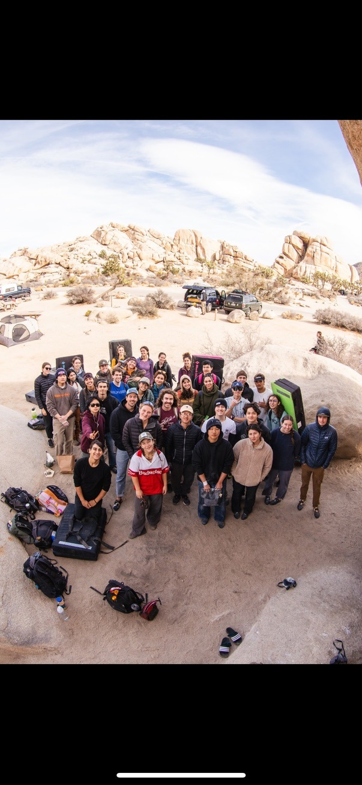
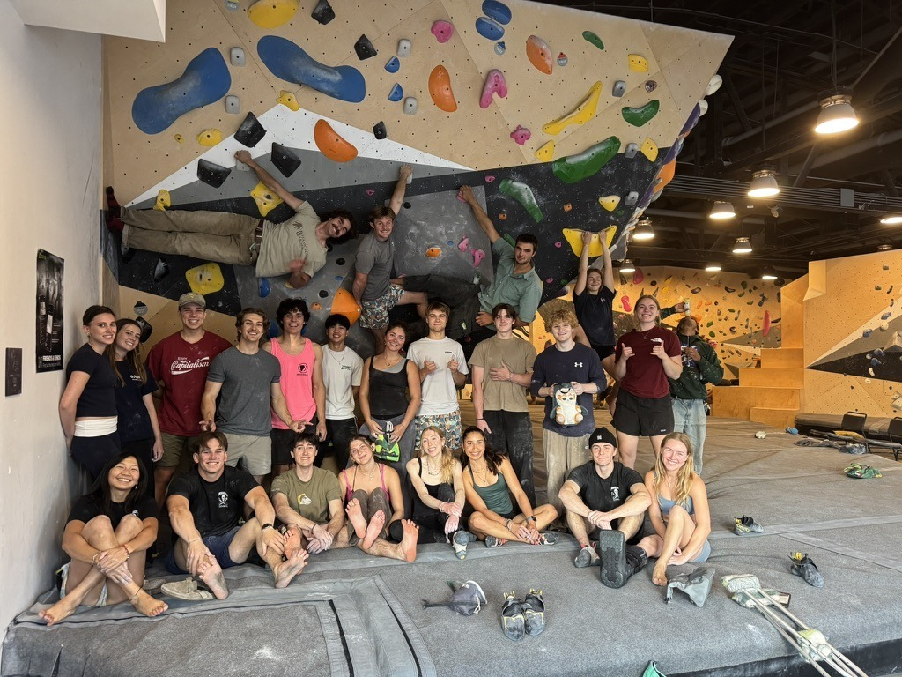

Cal Climbing
A student climbing community built around consistent practice, outdoor trips, shared gear, and making space for climbers at every experience level.


Cal Climbing brings Berkeley students together at local gyms and outdoor climbing areas.
My role
I served as Membership Officer for the 2025–2026 school year and serve as Treasurer for 2026–2027. Both roles sit at the intersection of people and operations: helping members find community, keeping club logistics moving, and supporting the trips and practices that make the organization feel active beyond a weekly meeting.
What I help build
Member community
Support a welcoming student organization for climbers with different backgrounds and experience levels, from first sessions in the gym to outdoor trips with longtime members.
Club operations
Help coordinate membership and the practical infrastructure behind practices, outdoor trips, gear lending, campsites, and gas reimbursements.
Why it matters
Climbing is one of the places where I most clearly see technical and interpersonal systems overlap. Good preparation, communication, and trust make it possible for a large group to move safely and enjoy the same day outside. Cal Climbing gives me a chance to contribute to that environment while staying connected to the people and places that keep me curious.